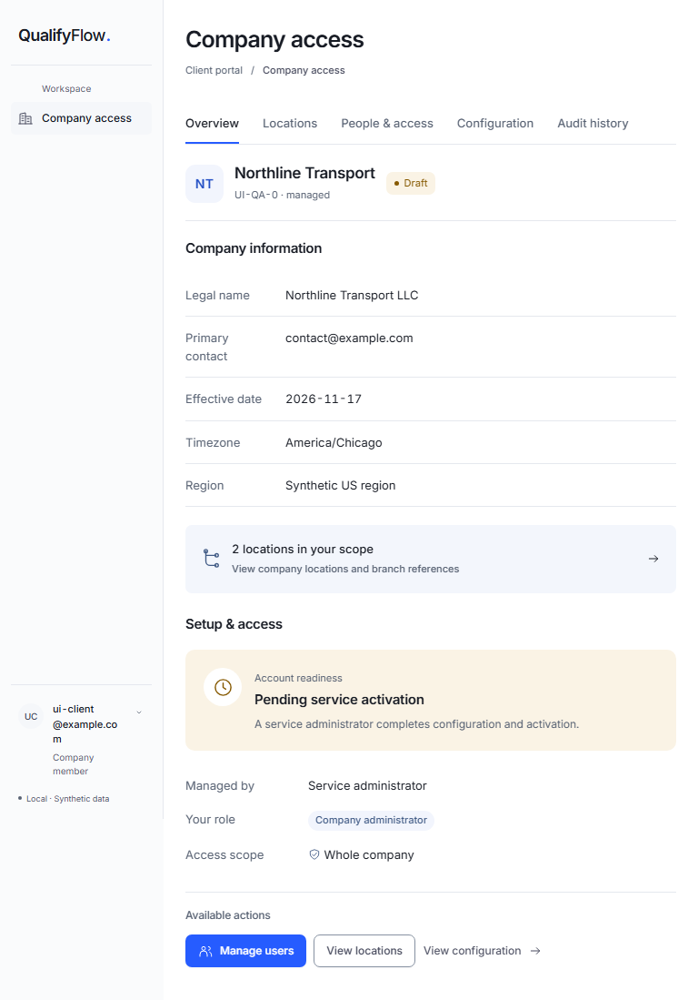
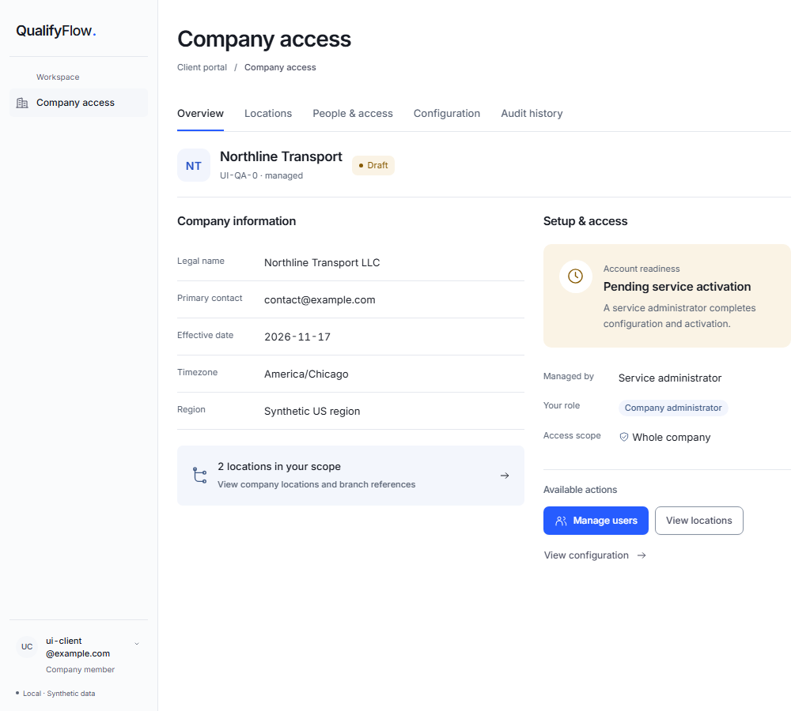
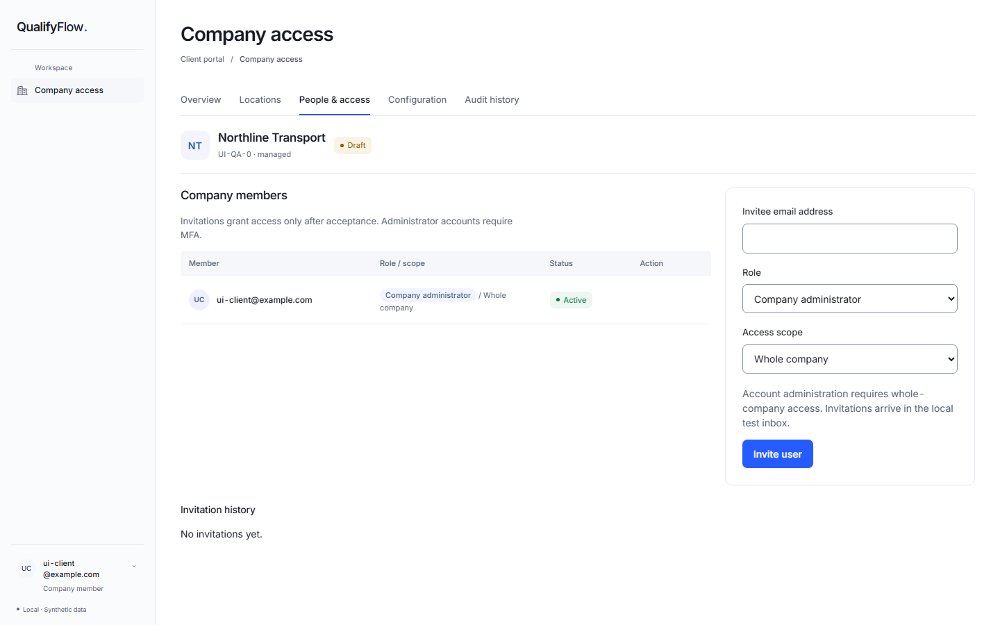
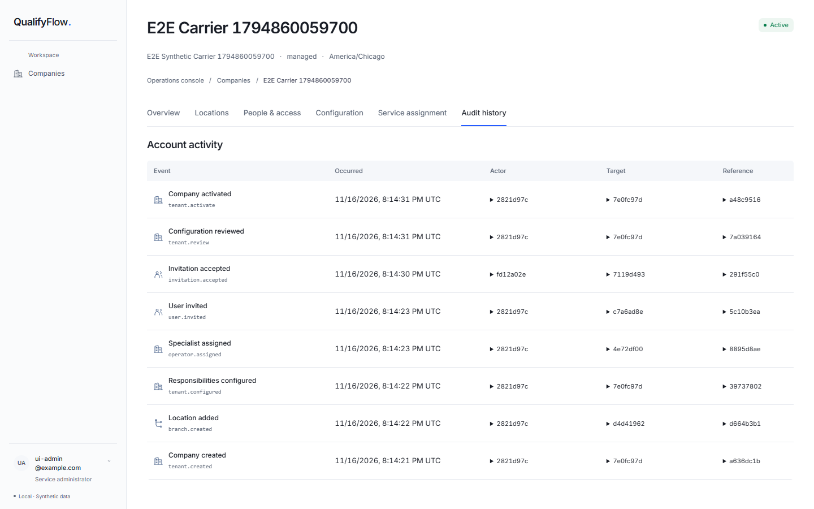
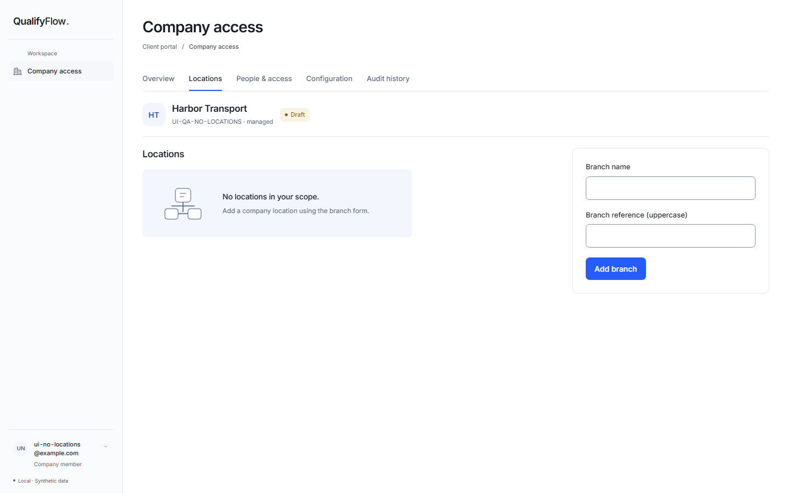
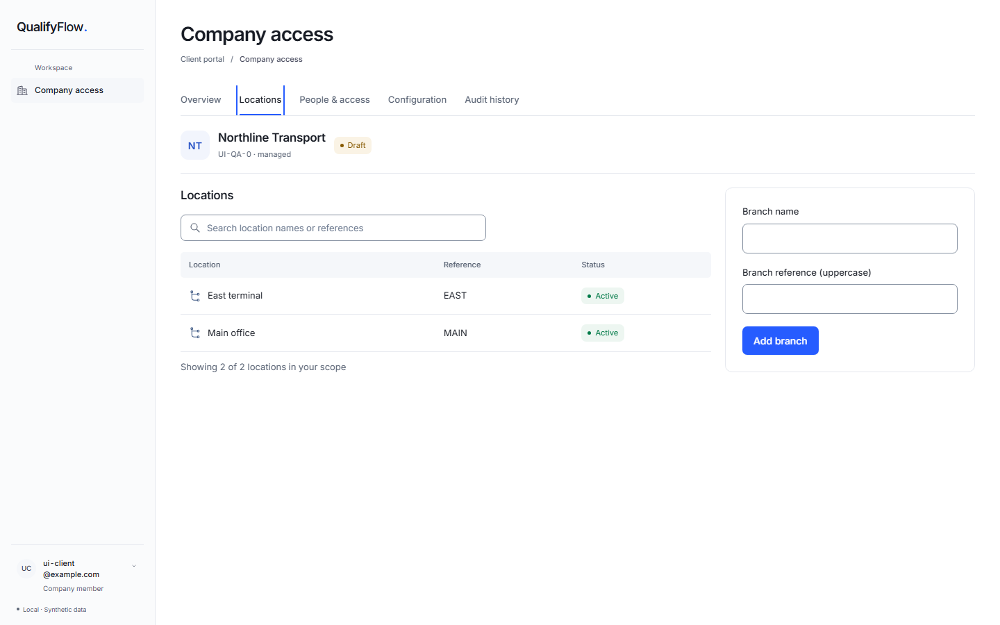
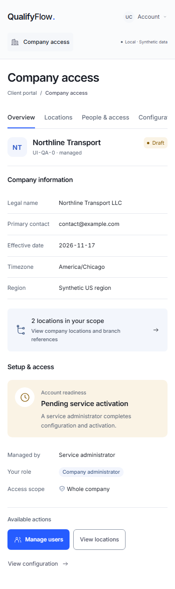
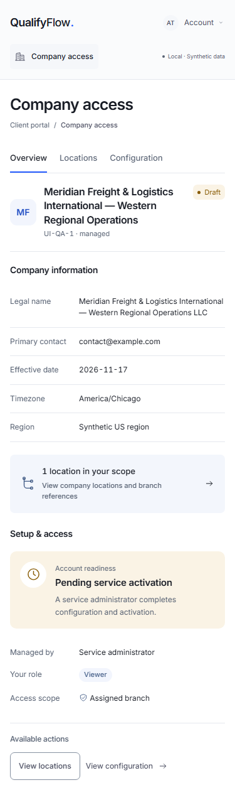

Visual information, working M1
Actual synthetic application captures. Sidebar, tabs and business behavior retained. Readiness shows state, never an invented percentage. Design and verification report · Raw browser results
Overview · 1440px, same viewport and account
Before After
After
Tablet composition
768px
1024px
People and accurate audit history
Actual member identity
Readable events, original codes and expandable identifiers
Empty locations and authorized records
True empty state
Existing location list
Phone · 375px
Company administrator
Long company name and branch-scoped viewer